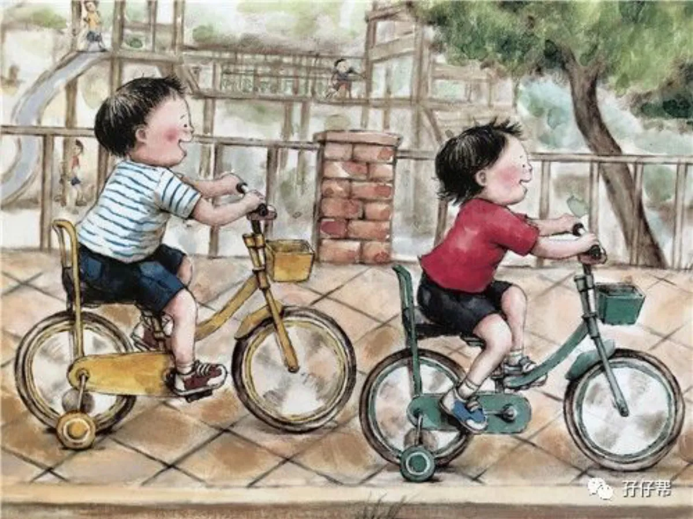
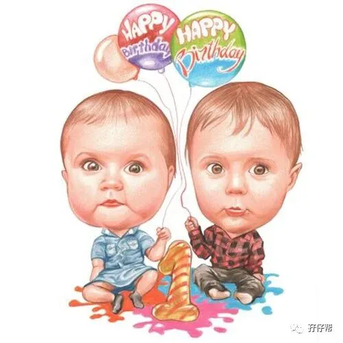
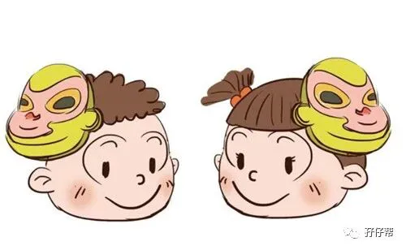
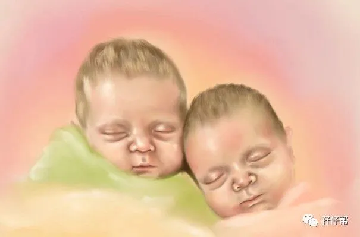
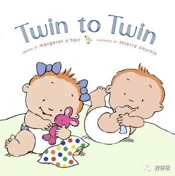

文|圆圈妈，一个文思如尿崩的双胎妈妈
图|来自网络，如有侵权，请联系删除
· 正 · 文 · 来 · 啦 ·
今天圈圈问了我一个问题。
“妈妈，为什么我是弟弟，圆圆是哥哥？”
“因为是圆圆先从妈妈肚子里蹦出来的。”
“为什么先蹦出来的是哥哥，后蹦出来的是弟弟？”
“......”
我就知道我会有今天的下场！
因为连我自己也没搞懂为什么他们哥俩明明相差一分钟出生，却非要被要求称兄道弟。
OK，这就是今天的文章主题，你家双胞胎孩子分老大老二了吗？如何划分的？
双胞胎谁大谁小如何划分？
普遍都按照传统方式来划分，即按出生顺序，先出生的宝宝为双胎之大，后出生的宝宝为双胎之小。
但事实上并没有那么简单。
这还关系到生产方式是剖腹产还是自然产，两胎儿在子宫内的位置，手术医生的刀法等很多主客观的因素。
针对这问题，有学者还提到了一个医学上的说法，对异卵双胞胎来说，医学上认为后出生的那个才是哥哥或姐姐！
因为两个胚胎是由不同的受精卵发育而成的，后出生的宝宝说明他在子宫中的位置更加靠上，比先出生的那个宝宝受孕、发育时间更早。
也有人脑洞大开地调侃，双胞胎谁大谁小，医生说了算。
因为医生在面对三条人命的时候，不会那么无聊去研究哪个受精卵先发育哪个后发育，才不会在乎谁的胎位在上谁在下。
通常都是随机的，看抓哪个手顺就先抓哪个出来，所以谁当老大的决定权往往在医生手里（麻烦产科医生出来澄清下是不是这样哈！）
还有一些双胞胎父母才不管传统方式还是医学理论，完全按照自己的喜好来划分双胞胎的排行。
体质较好，体重较重的是老大，因为默认老大一般都比老二较壮实。
若是龙凤胎，男孩理所当然被称为老大，因为自古以来都是哥哥保护妹妹，哪有弟弟保护姐姐的道理。
还有一种暖心的说法：后出生的是大的，因为大的都会让着小的。
还有一种恶作剧的说法：后离开母体的是老大，因为他力气大先一脚把小的踼出来。
你家双胞胎分老大老二了吗？
在我国，长幼尊卑的传统观念根深蒂固，素有「长兄如父」，「长姐如母」一说。
老大意味着稳重成熟，担起重任，老二则理所当然被保护，被偏爱。
按照这种说法，对于普通的兄弟姐妹而言，那自然是合乎常理的，但对于双胞胎而言，那可真是一点都不公平呢。
这要是发生在等级制度和长幼观念及其严重的帝王之家，那出生时间相差一分钟，等同于相差一个皇位的意思啊！
在我所接触到的双胞胎家庭中，绝大多数都不免落入俗套，在双胞胎宝宝刚出生时TA们的长幼次序标签好。
经常在双胞胎育儿群里看到刚升级的辣妈奶爸们报喜的时候都特意强调下：哥哥几斤/弟弟几斤，姐姐多重/妹妹多重。
双胞胎有必要区分长幼次序吗？
这个问题，你想过没有？
我认为，作为双胞胎父母不必太拘泥于双胞胎长幼次序的问题。
两个孩子本来就一样大，几乎同时来到这个世上，那些几分钟的差距完全可以当作误差忽略不计。
从我给他们哥俩起名一个叫圆圆，一个叫圈圈时，我就没打算规定谁是哥哥，谁是弟弟。
虽然他们从出生时间来算，确实有相差一分钟的距离。
我曾经不止一次被家中长辈提醒，要教会他们哥俩从小必须彼此以兄弟相称，不然长大后会被认为没礼数，缺乏教养，甚至兄弟情也会淡化。
我也曾被好奇的路人甲乙丙丁...一次次地追问他们俩谁是哥哥谁是弟弟？
然而，众人皆醉我独醒，举世皆浊我独清！
外人不懂，我懂就行！
我在我的原生家庭排行老三，上有大，下有小，深知为人长姐，为人老么的责任义务是完全不一样的。
自古以来，长的一方”倾向于责任取向、家庭取向、利他取向、劳动取向，“幼的一方”倾向于权力取向、个人发展取向、利己取向、享受取向。（摘自中国青年政治学院论文《双胞胎长幼次序社会化机制研究——基于对双胞胎与非双胞胎家庭社会化过程的比较》）
尤其是在我们国家，十分重视长幼有序，长子嫡孙与其他子女的家庭地位都是不一样的。
家里的老大说话都特别大声，老二基本上只有附和的份。
“长兄”，“长姐”，这个词放在任何一个双胞胎孩子身上都太沉重了！更何况他们并非真正意义上的兄或姐。
双胞胎在生理属性上本无长幼次序，就因为父母当年一个似有若无的标签，就不得不背负一辈子的责任义务。
请问，这真的公平吗？
圆圈兄弟不是真正意义上的长兄和幼弟，他们完全可以不分大小，平起平坐。
我希望他们把彼此当朋友，知己，亲人，平等共处，而不是谁是兄谁是弟...
我希望他们活出不一样的自己，而不是受长幼次序的约束…
所幸，在我们的教育引导下，圆圈兄弟之间从来没有用“哥哥”“弟弟”称呼彼此，都是互相叫名字。
虽然经常打架，但我觉得不打架的手足才是塑料做的，没有互动，没有感情。
要是有一天，他们真的因长幼次序吵起来，那就让他们自己决定吧！
我相信，等他们长大后发展出各自的个性特质，谁适合当哥，谁适合当弟必定一目了然。
他们也必然会有自己的真实想法。
而在此之前，我都不会把事先安排好的长幼标签灌输给他们哥俩。
因为我知道，唯有后天的教养形成的长幼次序才是科学公平的，而关键人物就是我们双胞胎家长。
举个例子，假设我把圆圆视为哥哥，圈圈视为弟弟，那我对待他们哥俩的态度就会不一样。
我会像众多家长一贯的教育作风一样，对作为哥哥的圆圆赋予为人兄长较大的使命和责任感，而对作为弟弟的圈圈给与特别的偏爱和减免不必要的义务。
这样他们就会在潜移默化中，耳濡目染下，带着父母赋予的寄托和使命，按照既定的人生轨道，活出我们想要的社会人。
反之，如果我把圈圈当做哥哥一样栽培教育，那他最后必然也会被我训练成像个兄长一样的人物。
可见，真正会导致人格差异的是在后天的教与养 ，真正决定双胞胎孩子大小的是双胞胎父母。
双胞胎在社会属性上确实有长幼次序之分，如果你更倾向于把双胞胎孩子分大小，那我的建议只有一个。
你可以按照你的方式规定双胞胎谁是老大谁是老二，但在实际教育中不要拿“你是老大你就要让着老二”这种观念去教育他们。
这对任何一个孩子都是不公平的，甚至是一种无形的伤害。
在他们还没摸清成年人的规则游戏之前，就让双胞胎孩子们的成长世界，越单纯，越简单，越公平越好。
看下这段视频
关于谁大谁小
听一听
双胞胎的真实心声
#你如何看待双胞胎谁大谁小这个问题#
欢迎留言区说出你的想法哦！
关于这个号
谢谢关注！
我是圆圈妈
85后，全职妈妈
家有孖仔两枚，圆圈&圈圈
双胞胎育儿公众号：孖仔帮
ID:twinsbang
旨意分享双胞胎育儿经验帮助双胞胎家庭
有经验可循
有组织可靠
希望我的经验对您有所启发
期待与您一起共享双胞胎育儿经




